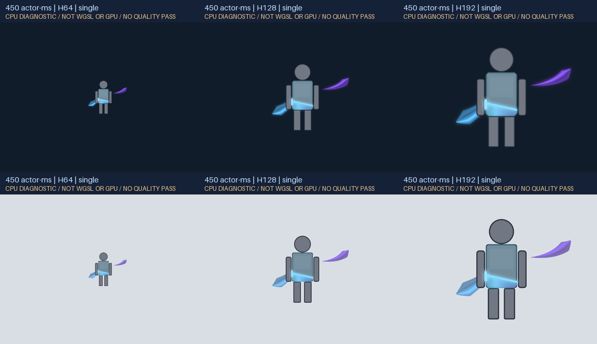
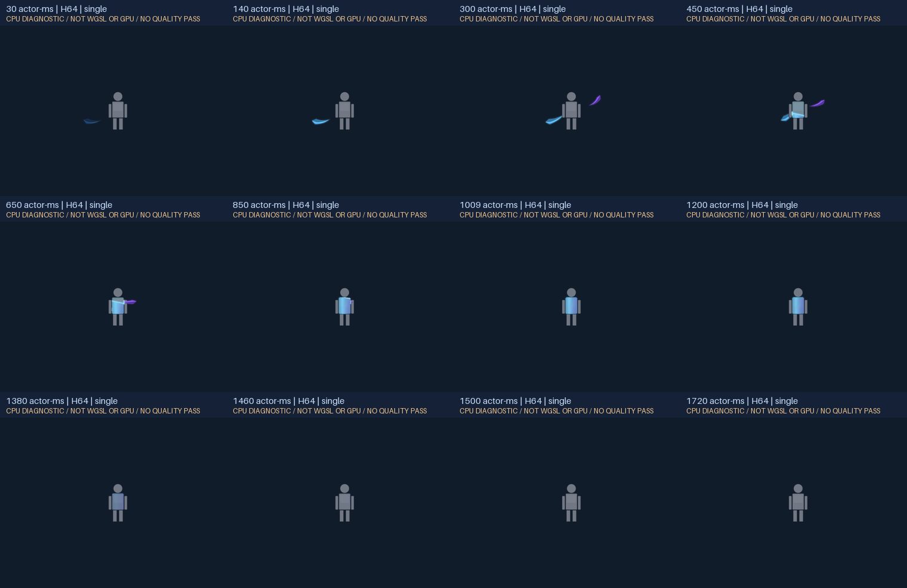
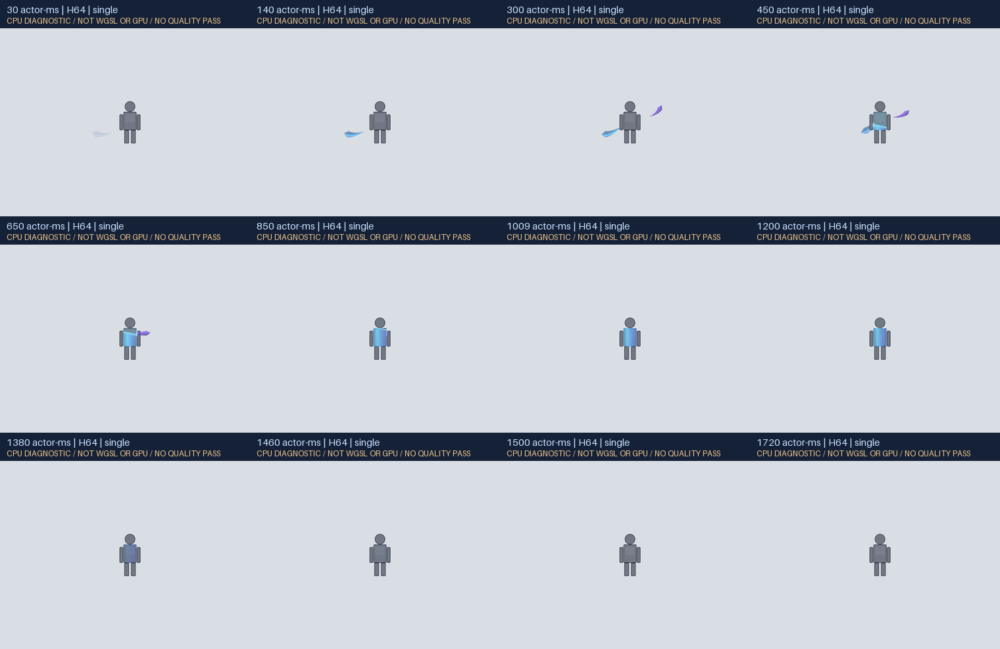

身体外の供給と、身体輪郭を継承する充填
主形は身体外で消費し、境界を越えた量に応じて受容ポリゴンを満たす設計です。別の楕円を胴内へ置きません。ただし、帯が刃・弾、内部が衣装着色やUIに見える可能性は実GPUで未評価です。

DVA / DIAGNOSTIC EVIDENCE
新規主形のCPU診断とoffline PCM。旧版の画像・音は使用していません。
主形は身体外で消費し、境界を越えた量に応じて受容ポリゴンを満たす設計です。別の楕円を胴内へ置きません。ただし、帯が刃・弾、内部が衣装着色やUIに見える可能性は実GPUで未評価です。

同じ時相samplerを独立CPU近似で描いた時点列です。連続再生の人間による全寿命確認ではありません。実寸判断と自然再生はライブページで行ってください。

背景色だけを変更しています。明背景用の減光、輝度切替、形の差し替えはしません。終盤は獲得量を減らさず、身体面の光とcoverageを減衰させます。

一原因一声の数値合成。実聴はnot_runです。
同じactor位相を2倍で読むため、長さとピッチが同じ比率で変わります。
0・160・320 actor-msの独立原因。視覚の層数を声数にしません。
wall開始は0・80・160ms。数値出力の終了は910ms、聴覚品質は未評価です。
r0.3の失敗はユーザーが示した限定観察の報告として記録しました。旧版の全寿命をこちらで確認したとはしていません。r0.4のネイティブWGSLコンパイルとGPU描画は、この環境のmanaged browserがlocalhost navigationを拒否したためnot_runです。